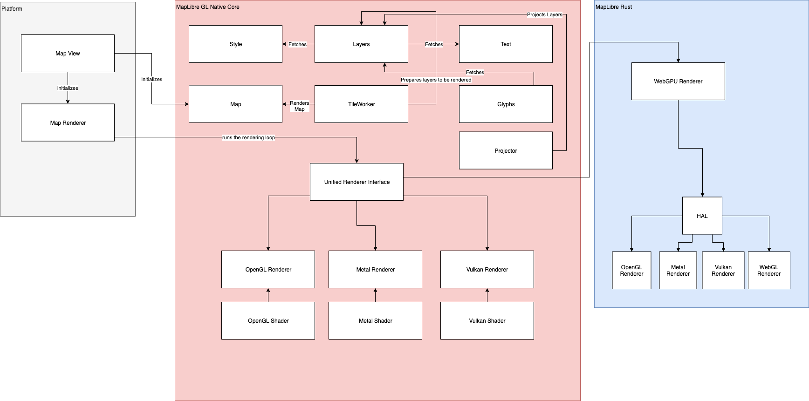

Introduction
MapLibre Native is a community led fork of Mapbox GL Native. It's a C++ library that powers vector maps in native applications on multiple platforms by taking stylesheets that conform to the MapLibre Style Specification, a fork of the Mapbox Style Spec. Since it is derived from Mapbox's original work it also uses Mapbox Vector Tile Specification as its choice of vector tile format.
Design
This section is dedicated to documenting current state of MapLibre Native. Architectural Problems and Recommendations section notes recommendations for future improvements from an architectural perspective.
Ten Thousand Foot View

Figure 1: MapLibre Native Components – Ten Thousand Foot view
From ten thousand foot, MapLibre Native is composed of Map View and a Renderer. MapLibre Native supports iOS, Android, Linux, QT, MacOS, and nodeJS at the time of writing. Each of these platforms have their own Map View and Map Renderer component. A Map Renderer talks to a shared codebase that renders map by using device GPU. This shared piece of code at the time of writing supports OpenGL as its choice of rendering API.
Apart from the platform code, MapLibre Native offers shared implementation for Style, Layers, Text, Glyphs, and Tiles.
To summarize:
-
Map View is responsible for viewing a slippy map, a term referring to web maps which lets a user zoom and pan around. Each platform has its own Map View.
-
Map Renderer is composed of two parts, one is a platform specific map rendering loop. The other is a cross-platform renderer backend, denoted as Renderer in Figure 1.
-
A map renderer uses a Tile Worker to render individual map tile. It uses an Actor Framework to send messages to a Tile Worker to produce said tiles.
-
A tile worker prepares a tile one layer at a time. A map tile is composed of multiple layers.
-
A Layer requires Style, Glyphs, and Sprites for to be ready for rendering. Features rendered in a Layer come from data sources. And a Layer is composed of tiles produced from said features.
We will look a bit more into these components going forward1.
Map View
A Map View is a reusable map viewer that renders a raster or vector map in different platform specific viewports. It bears the standard of common map configuration across the platforms. These ranges from map viewport size, pixel ratio, tileset URL, style, collision configuration for text, and annotations2. A Map View does not contain any rendering capability of its own. It publishes and listens to events through observers3.
Figure 1 does not display the explicit use of observers for brevity.
Observers
Observers are a group of components that listen and publish events from and to a Map View. Observer come in two major flavours across platforms -- a map observer and a rendering observer. A map observer is responsible for handling events for map configuration changes. This includes events for loading and updating style, events for map becoming idle, events initialization and completion of rendering, and events for camera orientation changes. On the other hand, a rendering observer deals with events that are directly related to frame-by-frame map rendering. A rendering observer might publish a rendering event to map observers but they are usually rendering initialization or completion events. One key thing to remember here is a map configuration can lead to rendering changes such as camera switch, map center change, viewport size change, zoom, and pitch change.
Style
Style component embodies a MapLibre Style Document. A style document is a JSON object that defines the visual appearance of a map through the order to draw it in, what to draw, and how to style the data while drawing it. Style sub-component is composed of classes and functions that allows downloading, and configuring a style. A style can be fetched from a remote HTTP resource or configured locally. The style component also carries a Sprite Loader to load sprites, remote HTTP URL for glyphs, layers to draw and sources of data to draw. A sprite is a single image that contains all the icons included in a style. Layers are composed of sources where a source could be a vector tile set, raster tile set, or GeoJSON data
To complete initialization of a map component, we need to initialize a map, style with source and layers, and observers.
Layer
Layer is an overloaded terminology in the MapLibre Native's context. Layer can mean any of the following:
-
From the point of view of data that needs to be rendered on map, each map tile is composed of layers of data. Each layer, in this context, contains features4 to be rendered in a map. These features are defined by a source. Each layer is tied to a source.
-
From the point of view of style, a style's layer property list all the layers available in that style. A single style sheet can be applied atop one or many layers. This layer definition converges data to be rendered and the style to be applied on said layer.
When this document uses the word layer in context of rendering, it refers to the definition mentioned in 2.
Glyphs
A glyph is a single representation of a character. A font is a map of characters5. Map tiles use labels of text to show name of cities, administrative boundaries, or street names. Map tiles also need to show icons for amenities like bus stops and parks. A map style uses character map from fonts to display labels and icons. Collectively these are called glyphs.
Glyphs require resizing, rotation, and a halo for clarity in nearly every interaction with the map. To achieve this, all glyphs are pre-rendered in a shared texture, called texture atlas. This atlas is packed inside protobuf container. Each element of the atlas is an individual texture representing the SDF of the character to render.
Each glyph bitmap inside is a field of floats, named signed distance. It
represents how a glyph should be drawn by the GPU. Each glyph is of font
size 24 that stores the distance to the next outline in every pixel. Easily
put if the pixel is inside the glyph outline it has a value between 192-255.
Every pixel outside the glyph outline has a value between 0-191. This creates
a black and white atlas of all the glyphs inside.
This document currently does not have a dedicated section on text rendering. When it does, we will dive more into glyph rendering.
Actor Framework
MapLibre Native is used in mobile platforms. To be performant in underpowered environments, MapLibre Native tries to leverage message passing across threads to render frames asynchronously. The threading architecture in implementation realizes this using the Actor interface6. In reality the messages are raw pointers. This ranges from raw message to actionable message. By actionable message this document means anonymous functions that are passed as messages between actors. These arbitrary messages are immutable by design. The current implementation of the Actor framework is done through two major components, a MailBox and an Actor. A MailBox is attached to a specific type of Message. In the current implementation, these are rendering events that render layers, sources, and subsequently tiles. An Actor is an independent thread passing messages to others.
Renderer
A Map Renderer translates geospatial features in a vector or raster tile to rendered or rasterized map tiles shown in a slippy map. MapLibre Native uses a Renderer component to translate map tiles fetched from a tile server to a rendered map.
MapLibre Native uses a pool of workers. These workers are responsible for background tile generation. A render thread continuously renders the current state of the map with available tiles at the time of rendering. In Javascript and iOS, the render thread is the same as the foreground/UI. For performance reasons, Android render thread is separated from the UI thread. The changes to the map on the UI due to user interaction is batched together and sent to the render thread for processing. The platforms also include worker threads for processing for platform-specific tasks such as running HTTP requests in the background. But the core code is agnostic about where those tasks get performed. Each platform is required to provide its own implementation of concurrency/threading primitives for MapLibre Native core to use. The platform code is also free to use its own threading model. For example, Android uses a GLSurfaceView with a GLThread where the iOS SDK uses Grand Central Dispatch for running asynchronous tasks.
Tile Worker
We have noted early in this document that MapLibre Native uses message passing to communicate with the renderer. These messages are immutable by design and the render loops checks for these in each iteration. To simplify, there is only one thread allocated for rendering loop, background or foreground7. A Tile Worker is a thread that prepares a tile of a specific type. Geometry Tile Worker by the name of it, prepares a tile for rendering tiles that contains vector geometry. Following that same trend, MapLibre Native offers tile worker for raster tiles and elevation tiles. Messages sent to a tile worker can be processed by any thread, with the assumption that only one thread at a time will work with a tile worker instance.
Tile workers are not based on a common interface or base class. Tiles are. MapLibre Native offers a base Tile class. Raster, Geometry, and Elevation tile instances are inherited from Tile base class. Through this inheritance MapLibre Native maintains the association of Tile types and tile workers. Any Tile Worker is an actor that accepts messages of a specific Tile type. For a Geometry Tile Worker, the type is a Geometry Tile.
*To read in depth about the workflow of a Geometry Tile Worker, please check Geometry Tile Worker chapter.
To read in depth about the data flow for map initialization and rendering in Android, please check Android Map Rendering Data Flow
This document speaks of a simplified configuration for brevity. These also includes viewport mode, constrain mode, and north orientation.
Platform SDKs might use a wrapper map view class atop the map component. This is to help establish contract between the device runtime running a different language. Android is a good example of this behaviour.
A feature is the spatial description of a real-world entity such as a road or a utility pole. Any geometry that is displayed on a map tile is either an individual feature or a part of a feature.
This document used the term glyph and character interchangeably. In reality, a single character can have multiple glyphs. These are called alternates. On the other hand, a single glyph can represent multiple characters. These are called ligatures.
In the Javascript counterpart, MapLibre GL JS, this is achieved through usage of webworkers.
In iOS, the render thread runs on UI thread, as in it's a foreground thread. Android offers wider range of devices in terms of battery capacity. Hence, Android prefers to use a background thread for rendering loop.
Coordinate System
Before we jump into the coordinate system of MapLibre Native, let's quickly review the concepts of translating a position on the face of Earth to a map tile. This is not a comprehensive refresher of coordinate reference systems or rendering basics. Rather this intends to guide the reader on what we want to achieve in this section.
We start from Earth, which is a geoid which is mathematically expensive to use as a reference coordinate system. Thus, we approximate the earth to reference ellipsoids or datum. For this documents' scope, WGS84 is used as the canonical datum. Our goal is to represent geometries defined by WGS84 longitude, latitude pair coordinates to a map tile.
Instead of translating a full geometry, in the following subsections, we will project a WGS 84 point to a map tile rendered in MapLibre Native.
World vs Earth
This document uses the word Earth when it refers to the planet in which we all live in and make map tiles for. This document uses the word World to denote the world MapLibre Native renders. The word world in rendering terms mean the world to render. It could be a set of cones and boxes, a modeled city, anything composed of 3D objects. MapLibre Native renders map tiles in a range of zoom levels on a 3D plane. Map tiles are already produced from a WGS84 ellipsoid. Therefore, when this document uses the word World, it means the 3D plane containing a set of map tiles to be rendered, not the Earth.
Transformations
MapLibre Native requires a series of coordinate transformations to render a geometry from map tile. This is where we refresh our rendering knowledge a bit. To render anything through a GPU:
-
Design and define model in the Local Space. We call anything that needs to be renderer a model. In the Local space, a model lives in its own coordinate system. For MapLibre Native, in local space each individual tile is modeled. This map tile is already populated by a map tile generation process. The longitude, latitude bound per tile is now translated to pixel bounds in this local space.
-
When model matrix is applied to local space, as in a camera is applied, Local Space transforms to World Space. In this space, the model coordinates are relative to the world's origin. In this space all the individual map tiles to be rendered are introduced in the world space.
-
The World Space is not seen from a viewpoint of a camera. When we see the world from a viewpoint of a camera, view matrix transformation is applied. Cameras can see the world up to a distance like human eyes can. To emulate that we apply Projection Matrix to View Space and end up in Clip Space1.
-
Finally, the World Space is transformed to device screen by applying viewport transform matrix.
Going forward, scoping our discussion only to MapLibre Native, we will talk mostly about two categories of coordinate systems:
-
World Coordinates
-
Device Coordinates
World Coordinates are defined in World Space. This speaks of how this world defines itself in a three-dimensional space.2 On the other hand, device coordinates are used through View, Clip, and Screen Space. The purpose of this set of coordinates is to define how the world will be projected on a screen. Device Coordinates define how a world will be projected on a screen.
The unit of measurement will be pixels in this document. When the map tiles are generated by a system, the unit of distance in each tile is measured in degree angles instead of meters. Because angular distance stays the same if we move the angle across the axis of earth.
Figure 2 shows rendering map tile through the rendering spaces and transformations below:

Figure 2: Rendering Spaces and Transformations for Map Tiles
World Coordinates
World Coordinates for maps start with Geographic Coordinate Systems. Geographic Coordinate Systems use the three-dimensional model of the earth (ellipsoid) to define specific locations on the surface to create a grid. Traditional longitude, and latitude coordinate pair to define a location is an example of using geographic coordinates. EPSG: 4326 (WGS84) is the reference Geographic Coordinate System that most of the world's geospatial data is defined and stored3 in. There is no way to visualize the WGS84 coordinate system on a two-dimensional plane, in this case, the map.
Projections are used to translate WGS84 coordinates to a plane. To be specific, projections are used to translate a location on the ellipsoid to a two-dimensional square. EPSG:38574 or projected Pseudo-Mercator Coordinate System is such a coordinate system. EPSG:3857 is used by MapLibre Native as a default coordinate system to display maps. This system takes WGS84 coordinates and projects them into sphere. This stretches out the landmass in the hemispheres but mathematically makes it simpler to project a location back to a 2D plane. As in, a sphere divided into angular equidistant grid produces rectangular grids when projected into a 2D plane. The philosophy behind this was to make rendering maps easy, as in drawing 2D squares on a plane is computationally trivial.
Our world can be now broken down into these squares or tiles as we will call it going forward. This system imagines the world as a giant grid of tiles. Each tile has a fixed size defined in pixels.
worldSize = tileSize * number of tiles across a single dimension
For brevity, this document assumes the reader knows that map tiles are divided into a range of zoom levels. And each tile in zoom N gets divided into 4 tiles in zoom N+1. A tile size of 512 pixels and zoom level 11 will deduce worldSize to be the following:
worldSize = 512 * 2^11 = 1048576
Although each tile breaks into 4 in the next zoom level, we used a power of 2. This is because X and Y both dimensions expand with a factor of 2.
Example: We start from translating a WGS84 location with longitude
-77.035915 and latitude 38.889814. To translate a degree longitude
relies on normalizing the latitude range [-180, 180] to [0, 1048576]. This means the X pixel value of a specific tile requires
shifting our coordinate by 180. For example, a location with longitude
-77.035915 becomes*:*
X = (180 + longitude) / 360 * worldSize
= (180 + -77.035915) / 360 * 1048576
= 299,904
Finding the X coordinate is easy to compute. But the Y requires a more than normalizing the range. This is due to the aforementioned space stretching in the hemispheres5. Latitude value (Y) defined in WGS84 will not be the same position after stretching. The computation looks like the following if the latitude was 38.889814:
y = ln(tan(45 + latitude / 2))
= ln(tan(45 + 38.889814/ 2))
= 0.73781742861
Now, to compute the pixel value for y:
Y = (180 - y * (180 / π)) / 360 * worldSize
= (180 - 42.27382˚) / 360 * 1048576
= 401,156
Tile Coordinates
Our next pursuit is to translate World Coordinates to Tile
Coordinates. Because we want to know where exactly inside a map tile a
location (longitude, latitude) coordinate gets rendered and vice versa.
This system creates different pixel ranges per zoom level. So, we append
the zoom level along with the X and Y pixel values. Dividing the pixel
values with the tile size normalizes the X and Y value per tile. This
means (x:299,904, y:401,156, z:11) becomes (585.7471, 783.5067, z11).
We divide our X and Y pixel value by tile size because we want to know
the starting coordinates of each tile instead of individual location
coordinates. This helps in drawing a tile. If we now floor the
components to integers, we get (585/783/11). This marks an individual
tile's X, Y, and Z.
To reach our goal of translating a location to a coordinate inside a
tile, we need to know what is the extent of the tile. MapLibre
Native follows Mapbox Vector Tile (MVT) spec. Following said spec,
MapLibre Native internally normalizes each tile to an extent of
8192. Tile extent describes the width and height of the tile in integer
coordinates. This means a tile coordinate can have higher precision than
a pixel. Because normally a tile has a height and width of 512 pixels.
In this case, with an extent of 8192, each Tile Coordinate has a
precision of 512/8192 = 1/16th of a pixel. Tile extent origin (0,0)
is on top left corner of the tile, and the (Xmax, Ymax) is on the bottom
right. This means (8192, 8192) tile coordinate will be in the bottom
right. Any coordinate greater or lesser than the extent range is
considered outside the extent of the tile. Geometries that extend past
the tile's area as defined by the extent are often used as a buffer
for rendering features that overlap multiple adjacent tiles.
To finally deduce the Tile Coordinates we multiply the remainder of our Tile components with extent:
(585.7471, 783.5067, z11) -> (.7471 * 8192, .5067 * 8192) = (x:
6120, y: 4151)
This makes the Tile to be (585/783/11) and Tile Coordinates
to be (x: 6120, y: 4151) for WGS84 location with longitude -77.035915,
and latitude 38.889814.
After defining Tile Coordinates, our pursuit continues to translate these coordinates to native device coordinates. To reiterate our progress in the perspective of rendering, we just defined our local space with tile coordinates. Local coordinates are the coordinates of the object to be rendered relative to its local origin6. In this case, the objects are the map tiles. The next step in traditional rendering workflow is to translate object coordinates to world coordinates. This is important to understand if we are to render multiple objects in the world. If we treat all tiles in a zoom level being rendered in a single 3D horizontal plane, then the World Space has only one object. And in MapLibre Native, this plane has an origin of (0,0), positioned on the top left.
Device Coordinates
World space for MapLibre Native contains a plane in 3D with all the tiles for any specific zoom level. Map tiles are hierarchical in nature. As in they have different zoom levels. MapLibre Native internally stores a tree object that mimics a tile pyramid. However, it does not create a hierarchy of 3D planes where each plane mimics one zoom level. It reuses the same 3D plane to re-render the tiles in the requested zoom level at a time.
The journey towards rendering the tiles in the device screen from the world space starts with View Matrix, as defined in the world space. The key part here is the camera. A view matrix is a matrix that scales, rotates, and translates7 the world space from the view of the camera. To add the perspective of the camera, we apply the Projection Matrix. In MapLibre Native, a camera initialization requires map center, bearing, and pitch.
Initializing the map with a center (lon, lat) does not translate or move the 3D plane with tiles, rather moves the camera atop the defined position named center. In the rendering world, this is not the center of the 3D plane we render tiles on, rather the position of the camera.

Figure 3: Perspective Frustum (Sourced from learnopengl.com)
The benefit of tile coordinates continues here. The camera representation we use here, to be specific the view matrix, can directly take the tile coordinates to move the camera to a particular tile in a zoom level. Once a tile is built, the GPU can quickly draw the same tile with different bearing, pan, pitch, and zoom parameters8.
If we keep following Figure 2, we see we need to also add a projection
matrix. And MapLibre Native uses a perspective projection.
Perspective projection matrix introduces the sense of depth perspective
through the camera. As in objects further from the camera will look
smaller and objects closer to the camera will look bigger. This
perspective component is defined by parameter w. That is why the
shaders that MapLibre Native at the time of writing uses 4
dimensional vectors over 3 dimensional vectors. The 4^th^ dimension is
this parameter w. Therefore, theoretically a GL coordinate is of the
form (x, y, z, w).
Before we jump into the transformations, let's revisit an example scenario:
zoom: 11.6
map center: (38.891, -77.0822)
bearing: -23.2 degrees
pitch: 45 degrees
tile: 585/783/11
On top of this, MapLibre Native uses a field of view of 36.87 degrees or 0.6435011087932844 radians. This is somewhat arbitrary. The altitude of the camera used to be defined as 1.5 screen heights above the ground. The ground is the 3D plane that paints the map tiles. The field of view is derived from the following formula:
fov = 2 * arctan((height / 2) / (height * 1.5))
Factoring only the transformations of zoom, map center, bearing, pitch, and tile in, with a viewport of 862 by 742 pixels, the projection matrix will look like9:
| x | y | z | w | |
|---|---|---|---|---|
| x | 0.224 | -0.079 | -0.026 | -0.026 |
| y | -0.096 | -0.184 | -0.062 | -0.061 |
| z | 0.000 | 0.108 | -0.036 | -0.036 |
| w | -503.244 | 1071.633 | 1469.955 | 1470.211 |
To use our tile coordinates, we will turn it to a 4D vector of (x,y,z,w) with neutral w value 1. For brevity we used z value of 0. For buildings and extrusions z value will not be 0. But this document does not cover that.
So, tile coordinate (x: 6120, y: 4151, z:0, w:1) will transform to the
following due to a vector multiplication with the projection matrix:
| x | y | z | w | |
|---|---|---|---|---|
| x = 6120 | 0.2240.224 * 6120 = 1370.88 | -0.079 * 6120 = -483.48 | -0.026 * 6120 = -159.12 | -0.026 * 6120 = -159.12 |
| z = 4151 | -0.096 * 4151 = -398.496 | -0.184 * 4151 = -763.784 | -0.062 * 4151 = -257.362 | -0.061 * 4151 = 253.311 |
| z = 0 | 0.000 * 0 = 0 | 0.108 * 0 = 0 | -0.036 * 0 = 0 | -0.036 * 0 = 0 |
| w = 1 | -503.244 * 1 = -503.244 | 1071.633 * 1 = 1071.633 | 1469.955 * 1 = 1469.955 | 1470.211 * 1 = 1470.211 |
| Final Vector | 469.14 | -175.631 | 1053.473 | 1057.78 |
The finalized vector is off from what we have expected with the result from the simulation. This is due to multiplying with low precision.
The final vector will be (x: 472.1721, y: -177.8471, z: 1052.9670, w: 1053.7176). This is not perspective normalized. Perspective
normalization happens when we divide all the components of this vector
with perspective component w.
(472.1721 / 1053.72, -177.8471 / 1053.72, 1052.9670 / 1053.72)
= (x: 0.4481, y: -0.1688, z: 0.9993)
Doing this will take us into clip space. Clip coordinates contain all
the tile coordinates we wish to render in MapLibre Native but only in
a normalized coordinate space of [-1.0, 1.0].
All that is left now is to translate this to viewport coordinates. Following Figure 2, we use viewport transform to produce these coordinates:
Pixel Coordinates: (NormalizedX * width + width / 2, height / 2 -
NormalizedY * height)
= (0.4481 * 862 + 431, 371 - (-0.1688 * 742))
= (x: 624, y: 434)
These are our viewport screen coordinates where our desired WGS84 location longitude -77.035915 and latitude 38.889814 will be rendered.
Clip coordinates are normalized to -1.0 to 1.0. For brevity, this document does not dive deep into 3D rendering basics.
For brevity, this document is assuming the world we live in is three dimensional.
For brevity, this document does not dive deep into reference ellipsoids to approximates earth, also known as Datums. EPSG:4326 or WGS84 is such a Datum or reference ellipsoid.
There are other coordinate systems such as EPSG:54001 that uses equirectangles over squares to project the WGS84 coordinates. This document focuses on EPSG:3857 because MapLibre Native uses it by default.
This document scopes out the trigonometric proof of this translation for brevity. To know more: https://en.wikipedia.org/wiki/Web_Mercator_projection
For brevity, this document does not speak in depth of rendering basics in regards to coordinate systems. For more, please check: https://learnopengl.com/Getting-started/Coordinate-Systems
Scale, rotate, and translate are common rendering transformation used to produce model, view, and projection matrices. These operations are applied right to left. As in translate first, rotate second, and scale last. Matrix multiplications are not commutative, so order of operation matters.
The piece of code we run on GPU is called a shader. We will see more how shaders influence MapLibre Native rendering later in the document.
Matrix and examples produced from Chris Loers work hosted in: https://chrisloer.github.io/mapbox-gl-coordinates/#11.8/38.895/-77.0757/40/60
Expressions
Expressions are domain specific language (DSL) built by Mapbox for vector styles. Mapbox Vector Style is used in Mapbox Vector Tiles. Mapbox Vector Tiles is a vector tile specification initiated by Mapbox which was later widely adopted by the geospatial community.
To recap, Mapbox Vector Styles have 2 significant parts - Sources and Layers. Sources define where the geospatial features to display the map are loaded from. They can be GeoJSON, Mapbox Vector Tiles (MVT) etc. We draw said features on map using Layers.
A Layer references a single source. This is where expressions kick in. Expressions define how the data from a source will be painted in a layer following a style. For example, a heatmap, requires the ability to paint features in different zoom levels with different colors. Expressions facilitate that. The rendering depends on the style of the layer along with pitch, bearing, and zoom of the map. This was called Data Driven Styling (DDS). Another option that was used was to completely change the style in run time to achieve the same outcome1.
The desire of being able to render a layer in different zoom levels differently based on data drove the birth of expressions. To summarize, expressions do the following:
-
Expressions filter features from a source layer. This allows to apply conditional styling on the full or parts of the feature.
-
Expressions apply rendering transformations to filtered features. MapLibre offers expressions that can interpolate, and paint. An expression can be applied to a feature constantly, zoom dependent, property dependent, or in zoom and property dependent manner.
For a simple example of an expression, we will build a layer that displays
a text field fixed text hello world for all features in a vector source:
{
"id": "test",
"type": "symbol",
"source": "source",
"layout": { "text-field": "Hello world" }
}
If we wanted it instead to display the name property of each feature, we can use an expression like this:
{ "text-field": ["get", "name"] }
We can also mutate the value fetched from properties of the features. For
examplel, we can append a prefix Hello to the name by using the concat
expression:
{ "text-field": ["concat", "Hello, ", ["get", "name"]] }
By now, you probably have figured it out that expressions use a JSON-like syntax to define. For brevity, let's look at the construction of an example expression below:
'^': [
NumberType,
NumberType, NumberType],
(ctx, [b, e]) => Math.pow(b.evaluate(ctx), e.evaluate(ctx))
]
This defines an expression named ^ that returns a number
expression, and takes two number expressions as input. The
implementation follows right after. Another part to notice here is the
implementation evaluates both inputs because they are expressions too.
Expressions can be nested.
Although it looks like JavaScript, for MapLibre Native, the parser for any expression is written in MapLibre Native Core. Each platform such as iOS, Android has their own Expression class which provides builders to build an expression and add it to a layer. When an expression is added to a layer, the rendering part of the code picks it up in the MapLibre Native Core.
Also, inside MapLibre Native Core, this definition mechanism allows extending expressions library with custom expressions if desired.
Expression Types
In the example expression, we saw how one expression is defined. The
example also shows that expressions have types. Expression language can
accept input and output types of null, number, string, boolean, color,
object, value, array, error, collator, and formatted. The canonical
definition of Expressions is rooted in JSON. Like JSON, object type
is the mapping key type that maps a set of keys to values.
Beside the aforementioned data types, Expressions offer built-in functions or operators such as assertion, coalesce, interpolate, distance etc. The code uses the word kind to differentiate between these. Each kind of expression performs a single responsibility.
Assertion expressions assert the returning type from one expression is
asserted before putting into another. For example, a filter expression
of ["get", "feature_property"], returns a generic value type. To
use it on another expression that accepts a string type, an assertion
such as ["string", ["get", "feature_property"]] is necessary.
Assertion throws an evaluation-time error if the types don't match
during evaluation.
You might think this is a coercion instead of an assertion. If you are
seeking for coercions, read the upcoming paragraph. Expression names
that looks like to-something are coercions by convention.
Coercion expressions convert a return type to another type. It also
allows to define a fallback if the conversion fails. A good example of
this is to-number expression. For example, ["to-number", ["get", "feature_property"], 0] means that we are trying to cover the
feature-property to a number. If it fails, we will use 0 as a fallback.
Camera expressions are expressions that allow style property manipulation based on zoom, pitch, and distance from center.
Expressions are used paint property of a Mapbox Vector Style starting with a layer or filter selector. Expressions are evaluated by following an expression chain constructed from the root expression following the input expressions recursively.
Implementation
Implementation wise, expressions are divided into builders and parsers. Each platform such as Android and iOS have dedicated builder classes for different types of expressions. An example of interpolate expression from Android will look like:
fillLayer.setProperties(
fillColor(
interpolate(
exponential(0.5f), zoom(),
stop(1.0f, color(Color.RED)),
stop(5.0f, color(Color.BLUE)),
stop(10.0f, color(Color.GREEN))
)
)
);
To render the built expression, MapLibre Native uses expression parsers. Expression parsers are written in MapLibre Native Core (in C++). Each expression outputs an EvaluationResult class. Resolving an EvaluationResult can be deferred. As in, the result of an expression can be computed only when its necessary to be computed in runtime. A change induced by data or interaction in an expression evaluation result will result in a new style load in the rendering loop.
Sourced from Mapbox GL Native wiki: https://github.com/mapbox/mapbox-gl-native/wiki/Expression-Architecture
Architectural Problems & Recommendations
Up until now, this document focused solely on the state of MapLibre Native at the time of writing. This section speaks of possible future improvements for MapLibre Native from an architectural point of view. Before that, let's look into the architectural challenges MapLibre Native is facing1:
Renderer coupled with OpenGL
The renderer component is tightly coupled to OpenGL ES. It uses OpenGL ES as its only preferred rendering backend. Furthermore, MapLibre Native does not have a clear separation between the following:
-
The logical responsibility of rendering a map tile. This involves sourcing layers, applying styles, fetching glyphs and sprites for a map tile.
-
Rendering a prepared map tile in a rendering loop for a graphics API such as OpenGL.
The current rendering loop is only implemented for OpenGL. In 2018, Apple deprecated OpenGL for both iOS 12 and macOS in favour of Metal. Metal is Apple's own 3D graphics API. MapLibre Native's sole dependency on OpenGL ES puts it in a risk of deprecation for iOS customers.
Lack of support for other map projections except Web Mercator
MapLibre Native supports Web Mercator (EPSG:3857) as its only supported projection. This fulfills most of the web and device map needs. At the time of writing, modern map renderers such as Google Maps and Mapbox GL offers 3D globe, conic, and rectangular projections too. At the time of writing, MapLibre Native renderer component does not have an architectural separation for supporting multiple projections and coordinate reference systems.
Inconsistency among platforms
Each MapLibre Native platform has a Map View and Map Renderer component. The inconsistency introduced due to differences in concurrency model and programming language is unavoidable. But from an abstractions point of view there are inconsistencies that can be mitigated:
-
Map Configuration is modeled inside MapLibre Native Core, the shared cross platform codebase. Each platform creates its own configuration class and creates a shadow native object. The native configuration object is consistent across platforms but the platform specific configuration is not.
-
MapLibre Native has a sister repository named MapLibre GL JS. At the time of writing, MapLibre GL JS does not share any code with MapLibre Native except shaders, the style specification, and render test fixtures. This creates a feature inconsistency across web and device experience for customers. The rendering architecture is also different between Web and Mobile. MapLibre GL JS currently uses WebGL through completely different implementations for Map, Style, Layers, Glyph, and TileWorker.
-
MapLibre Rust is an experimental initiative to create a new MapLibre implementation in Rust, entirely based on WebGPU. At the time of writing, WebGPU is a young platform that exposes modern computer graphics capabilities, especially Direct3D 12, Metal, and Vulkan through a shared API. It has promise, but the API at the time of writing only supports ChromeOS, macOS, and Windows 10. Technically, it can be used with Android and iOS but these platforms do not provide out of the box support for it. This also has created a divergent experience for customers when it comes to using MapLibre Native.
Lack of documentation
Last but not the least, MapLibre Native suffers from a general lack of documentation. This includes current state of the code architecture, continuous integration and development, testing strategy, and a roadmap for future improvement. This document intends to address the first.
Recommendations
This document proposes the following component architecture for MapLibre Native to address the architectural shortcomings.

Figure 4: Proposed Architecture of MapLibre Native
Proposed architecture of MapLibre Native in Figure 4 addresses the aforementioned problems by:
Modular Rendering
Introducing modularized rendering through Unified Rendering Interface. Unified Rendering Interface component will be responsible for implementing different graphics API workers for any tile workers. Each of these rendering workers will use platform specific shaders. This document does not dive deep into how these shaders will be produced or orchestrated. The problem Unified Rendering Interface solves is architecturally drawing a boundary between
-
The responsibility of rendering a map tile through GPU and,
-
Gathering all layers necessary to render a map tile through tile workers.
Projector Component
Introducing a new component named Projector. A projector component is responsible for adding multiple projection and coordinate system support for map tiles. Projector will take the features to be rendered as an input and project the layer to a projection or coordinate reference system. Projected world coordinates will then be translated to native device coordinates.
One example of introducing new component is supporting 3D maps in the future. This could mean rendering map tiles on a spherical globe instead of a flat 3D plane. At the time of writing MapLibre Native supports 2.5D extrusion for buildings and terrain tiles. Supporting confidential datums like GCJ-02 can also be achieved through this.
Future Convergence with WebGPU
This document acknowledges the value proposition Rust brings. At the time of writing, MapLibre Native Core is written in C++. Albeit written in C++, MapLibre Native code relies on immutable message passing between renderer and tile workers. Private functions also follow the C++ move semantics. This means, each private function takes ownership of the arguments passed to the function by copying it to a new memory.
Rust as a programming language enforces such intentions through compile time safety checks. Provided Rust Foreign Function2 Interface allows interoperability with Rust, this document proposes the following to be done in sequence:
-
At first, this document proposes to implement Modularized Rendering in C++ for MapLibre Native. This document also proposes that Unified Rendering Interface will keep the door open for a WebGPU backed renderer in MapLibre Native. This could address the divergence of web and native platforms in the future. The WebGPU renderer might be possible to compiled to WebAssembly and enable WebGPU powered rendering for browsers. This paves the path forward for a single unified renderer implementation for web and mobile devices.
-
After the delivery of Modularized Rendering, this document proposes to eventually migrate Style, Layers, Text, Glyphs, Projector, Tile Worker, and Map component to be migrated to Rust.
-
Finally, this document proposes to migrate Unified Rendering Interface and its implementations to Rust. This will completely transform MapLibre Native from a C++ ecosystem to a Rust ecosystem.
Following the above steps will merge towards a single MapLibre implementation for web and native.
This document deliberately does not speak of problems regarding build and infrastructure of MapLibre Native. They will be handled in individual design PR requests / documents.
Rust Foreign Function Interface allows interop bindings and code that needs to exchange C-Like strings with other programming languages.
Android Map Rendering Data Flow

Figure 5: Simplified data flow diagram of initializing a map in Android
Figure 5 shows a simplified data flow diagram of initializing a map. The device section of this data flow diagram is based on Android platform.
Before the map initialization request makes it to MapLibre Native Core, the request initializes a set of peer components in the platform or device runtime. Especially for Android, we have parts written in C++ using Android Native Development Kit and parts written in Java.
A map initialization starts with initializing a map in an Android View. A View occupies a rectangular area on the screen and is responsible for drawing and event handling. In this diagram this is denoted as a Map View inside the device runtime. This view is also responsible for initiating a Device Map Renderer which subsequently initializes a GL Thread worker. This thread is a render loop that takes UI events from the Android View and passes it downstream to get the rendered map.
On the native C++ side of the device code, we see a peer Map View component. This one is a wrapper class between the Android Map View and the generic Map Component. For Android, this maintains the JNI method contract established from the Java runtime. The render thread this document talked about before is seen in the form of MapRenderer. This is an Actor that passes the rendering events from the device runtime to MapLibre Native renderer.

Figure 6: Workflow of rendering tiles
Before the frame-by-frame map rendering starts with MapLibre Native renderer, the generic map component gets initialized. Rendering each frame of a map tile or initializing the map view requires a set of Transforms. Through transform basic mutations like rotation, tilt, projection is accomplished. Transforms are essential for every aspect of rendering such as resizing the viewport, setting initial map camera, changes in map camera due to tilt, zoom, and movement. Each of these operations manifest into a set of Transforms that gets applied to the to-be-rendered map tile or already rendered map tile. The Transform class noted in the diagram however does not represent a single or multitude of transformations. A Map View like other components inside MapLibre works as a state machine. The Transform class maintains the current set of global transforms applied to the map. To simplify to change the camera orientation, zoom, or pitch a Map View will update the state of the Transform class. And the Transform class will use observers to send a transform event to MapLibre Native renderer. This overall transform directive, such as change camera location from point A to point B will translate to a set of transformations deduced by the Renderer component.
Along initializing the Transform state, the Map View will also initialize the Style sub-component. The Style component here also follows a state machine-esque behaviour. It holds the current state of used Styles for the Map View along with layers, glyphs, and sources. A change in style or initialization of style translates to re-loading the Glyph Atlas, Sources, and Layers. A Glyph Atlas is a combined image all glyphs. The renderer slices the necessary glyph by bounding boxes whenever necessary. Different sources are loaded differently. For Tilesets, the tile data is loaded but not rendered right away. For client provided data sources such as GeoJSON, the data is loaded from the file source or code. Then these sources are organized into layers dictated by the style and the layers are sent for rendering through the actors.
The key philosophy of rendering tiles is tiles are rendered layer by layer. A collection of tiles is called a tile set. To optimize tile rendering, MapLibre Native only renders dirty tiles. A dirty tile is a tile rendered in the viewport that has changed due to user interaction. To initiate this process, MapLibre Native loads the tileset to be rendered first. In a rendering request, if the tileset is already loaded, MapLibre Native will use a cached tile set.
The next decision to make here is which tiles are to be rendered on the viewport. To deduce this, MapLibre Native translates the device viewport coordinates1 to a tile cover. A tile cover loads all the tiles that will rendered to current viewport. If the viewport already has all the tiles that is needed to be rendered by the deduced tile cover, there are no dirty tiles. If the tile cover somehow has a single or all new tiles to be rendered in the viewport, the existing tiles displayed in the viewport are deduced to be dirty. And only these tiles are replaced instead of a complete re-render.
Moving to the render flow now. The render flow is depicted in Figure 7. The diagram introduces a new component block named a Tile Renderer. These diagrams might look verbose but in reality, they are a simplified version of the actual code flow.
The render workflow stays the same as the initialization workflow up to reaching the Render Orchestrator. This time instead of initializing the render orchestrator, the flow uses the render orchestrator to create a Render Tree. A render tree is a tree of to-be-rendered items in order. This includes rendering items from layers, sources, line atlas, and pattern atlas. A render orchestrator does not render anything by itself. It orchestrates render items for the renderer.
In the render loop ran by the Renderer, each render request ends in creating a new render tree, and the render function. The render function uses a glyph manager for fetching glyphs and font stacks that contains said glyphs. Sources and Layers are translated to RenderSource and RenderLayer objects.
For the sake of restating, a layer is composed of a set of sources.

Figure 7: Simplified data flow diagram of rendering map tiles
A RenderSource is produced from a single source that has an internal update method. This method produces the tile pyramid to render for said source if the source is a TileSource. For brevity, this document only talks about tile sources. There are other types such as GeoJSON sources. They work in a similar manner as the tile source.
Viewport coordinates are derived from the coordinate system of the device screen. Anything rendered inside a unit cube of local space is translated to screen space of actual pixels. The tiles are rendered in a local space before rendered back to screen. We will see more about that in Coordinate System section.
Geometry Tile Worker

Figure 8: Simplified Geometry Tile Worker State Machine
Going back to Geometry Tile Worker, it is a state machine. The main principle is that Geometry Tile Worker should carry out each task till completion once it has begun even if it requires asynchronous waiting1. When a Geometry Tile Worker is working on a task, any new message to said worker is queued. Messages per unique tile are grouped. Upon finishing work, Geometry Tile Worker picks the latest message from the queue. All changes introduced in the queued messages are coalesced for the next work item for the tile worker. This way, a Geometry Tile Worker saves itself from starvation when it is under heavy workload. Coalescing also helps at finalizing the result when all the messages are processed because the map has stopped moving.
To dive a little bit deeper into this process, let's have a quick look at Figure 8. It shows a simplified representation of Geometry Tile Worker state machine. From a cursory look, the state transitions might not seem self-explanatory. We will take one step at a time to clarify.
Going forward, this section will use the term worker to denote a Geometry Tile Worker for brevity.
A worker is Idle when it has nothing to work on or completed coalescing queued messages. It is in Coalescing state when it has not finished processing all the messages in the queue. These two states are the two key states the worker floats between.
The initial transition from Idle to coalescing starts from a set message. A worker can receive a set message for data or a layer that is dependent on data. Referring back to Figure 8, this is what the transition label (set {Data, Layers} ) from Idle to Coalescing state stands for. This initiates an internal workflow named Parsing. Parsing means understanding the features to be rendered in a layer. Parsing process is encapsulated in parse() method. In the end of this method, a worker will also deduce required glyphs and images to render the tile.
A worker will send a message to the Tile it is working on fetching the necessary glyphs and images. From a threading perspective, it can happen in the same thread as the worker or in a different thread. Looking back to Figure 8, we also see another transition path from Idle state to coalescing state through symbolDependenciesChanged event. When a tile object is done with downloading pending glyphs and images it issues a onImagesAvailable or onGlyphsAvailable event to the worker2. Both of these events will translate to symbolDependenciesChanged event in the end. When symbolDependenciesChanged is fired, if the worker is on Idle state, it will move to Coalescing state. If the worker was already working on a tile and symbolDependenciesChanged is fired in the middle, it will move to NeedsSymbolLayout state.
Restart a worker in-progress: NeedsParse and NeedsSymbolLayout state
The logical question to ask right now is why does the worker have NeedSymbolLayout and NeedsParse state at all? Based on what we have seen so far, parsing and fetching symbols (glyphs, images) can be done in Coalescing state. This is to distinguish incremental changes introduced while the worker is already working on something. This was to facilitate a reset of current work and force the worker to parse and fetch symbols again from the Coalescing state. If we look back to Figure 8 now, we will see that Coalescing state goes to NeedsSymbolLayout if a symbol update (glyphs, images) has been encountered. NeedsSymbolLayout state will go to NeedsParse state with a set method invocation after updating the symbols. Coalescing state will go straight to NeedsParse state if only incremental data or layer change is introduced with a set method invocation.
To summarize, restarting an in-progress worker requires:
-
Send symbolDependenciesChanged through onImagesAvailable or onGlyphsAvailable event. To re-emphasize, these are not messages passed to the worker, rather events invoked through methods.
-
This will interrupt old parsing process and issue a new set method to re-parse data from NeedsSymbolLayout or Coalescing state. In both cases, the worker will end up in NeedsParse state to re-parse.
setShowCollisionBoxes event works in similar fashion. This event is used to show text label collision boxes in the to-be-rendered tile. It is used for debugging collision detection of text labels.
Finalization
A worker finalizes its work when all required data is parsed, and all symbols are loaded in a layout.
A Symbol Layout is the process of turning raw features into OpenGL buffers ready to be rendered. To simplify, a symbol layout contains images, glyphs, and their collision metadata positions relative to the tile to be rendered.
When a geometry tile worker has completed its work, it moves to Idle state by self-sending coalesced transition. Reiterating again, to consider the worker has coalesced, it has to parse all the coalesced data from available messages in the queue for a particular tile.
This is not entirely true. Going forward this section will shed some light on why. For the time being, the assumption accelerates understanding.
In reality, onGlyphsAvailable and onImagesAvailable events will be fired from GlyphManager and ImageManger instances. For brevity, this document does not speak of these classes.
MapLibre Native profiling
MabLibre Native integrates Tracy profiler which offers an easy way to understand and optimize your application's CPU and GPU performance
Tracy profiling
Introduction
MapLibre Native integrates Tracy profiler which offers an easy way to understand and optimize your application's CPU and GPU performance. Tracy mainly consists in manually adding markup instrumentation in the code to log performance events. These events can then be analyzed and visualized using the Tracy Profiler tool.
Instrumentation is generally the first step in profiling applications that use MapLibre. Once slow inner-loop routines are identified, additional hardware vendor specific tools can be used to collect hardware counters and optimize low level CPU and GPU code.
Tracy client
Tracy client consists of an API to mark CPU and GPU performance zones. A zone is a code section where the start and end timestamps are recorded.
Tracy server
The server is the Tracy profiler that allows the analysis and visualization of the client recorded data. The server can be downloaded from Tracy release page or it can be easily built from sources on Linux, Windows or Mac using CMake
Enabling instrumentation in MapLibre Native
Instrumentation is enabled by turning ON the CMake option MLN_USE_TRACY.
Tracy computational overhead is very low but by default it keeps all instrumentation events that are not consumed by the server in system memory. This can have a negative effect on platforms with low memory. To prevent high memory usage, TRACY_ON_DEMAND macro should defined. This way instrumentation data is only stored when the server is connected to the application.
Instrumentation in MapLibre
The file include/mbgl/util/instrumentation.hpp defines the following instrumentation macros:
MLN_TRACE_ZONE(label)
The macro records the timestamps at the start and end of the code scope. The parameter label is a user defined name for the zone. Example:
// code is not instrumented
{
MLN_TRACE_ZONE(EmptyZone) // Records from here until the end of the scope
// code here is instrumented
}
// other here not instrumented
MLN_TRACE_FUNC()
The macro is meant to be placed at the start of a function and expands to:
MLN_TRACE_ZONE(__FUNCTION__)
GPU instrumentation
OpenGL is also supported in MapLibre native. Tracy support is currently missing for other APIs such as Metal and need to be added separately.
MLN_TRACE_GL_ZONE(label)
This macro is similar to MLN_TRACE_ZONE except that OpenGL timestamp queries are inserted in the GPU command buffer instead of recording CPU time.
MLN_TRACE_FUNC_GL(label)
This macro is similar to MLN_TRACE_FUNC except that OpenGL timestamp queries are inserted in the GPU command buffer instead of recording CPU time.
Other macros
The above macros can be added inside MapLibre code and also in the application code that calls MapLibre.
The following macros should only be used if there are changes to MapLibre internals:
MLN_END_FRAME()
Mark the end of a frame.
MLN_TRACE_GL_CONTEXT()
Placed after an OpenGL context is created.
MLN_TRACE_ALLOC_TEXTURE(id, size) and MLN_TRACE_FREE_TEXTURE(id)
Record a read-only texture allocation and deallocation
MLN_TRACE_ALLOC_RT(id, size) and MLN_TRACE_FREE_RT(id)
Record a render target texture allocation and deallocation
MLN_TRACE_ALLOC_VERTEX_BUFFER(id, size) and MLN_TRACE_FREE_VERTEX_BUFFER(id)
Record a buffer allocation and deallocation that is intended to be used as a read-only vertex buffer
MLN_TRACE_ALLOC_INDEX_BUFFER(id, size) and MLN_TRACE_FREE_INDEX_BUFFER(id)
Record a buffer allocation and deallocation that is intended to be used as a read-only index buffer
MLN_TRACE_ALLOC_CONST_BUFFER(id, size) and MLN_TRACE_FREE_CONST_BUFFER(id)
Record a buffer allocation and deallocation that is intended to be used as a constant buffer
Usage example on Linux and Windows
Download or build the Tracy profiler (server) and run it.
Make sure you generate the MapLibre project with the option MLN_USE_TRACY enabled.
As an example, the glfw sample is used.
With CMake, in MapLibre repository root do
# generate project
cmake -B build -GNinja -DCMAKE_C_COMPILER=clang -DCMAKE_CXX_COMPILER=clang++ -DCMAKE_BUILD_TYPE=RelWithDebInfo -DMLN_WITH_CLANG_TIDY=OFF -DMLN_WITH_COVERAGE=OFF -DMLN_DRAWABLE_RENDERER=ON -DCMAKE_BUILD_WITH_INSTALL_RPATH=ON -DMLN_USE_TRACY=ON
# build
cmake --build build --target mbgl-glfw -j 8
# run
./build/platform/glfw/mbgl-glfw --style https://raw.githubusercontent.com/maplibre/demotiles/gh-pages/style.json --benchmark
with Bazel
# build and run
bazel run //platform/glfw:glfw_app -- --style https://raw.githubusercontent.com/maplibre/demotiles/gh-pages/style.json --benchmark
In the Tracy Profiler hit the connect button (or select the glfw application from the list of applications that are running Tracy Client). Profile then optimize the code.
Connecting the profiler to a MapLibre Android application
The Android application communicates instrumentation data to the profiler (Tracy server) on the network using port 8086 by default. You can expose the port to the profiler using Android Debug Bridge by running the command:
adb forward tcp:8086 tcp:8086